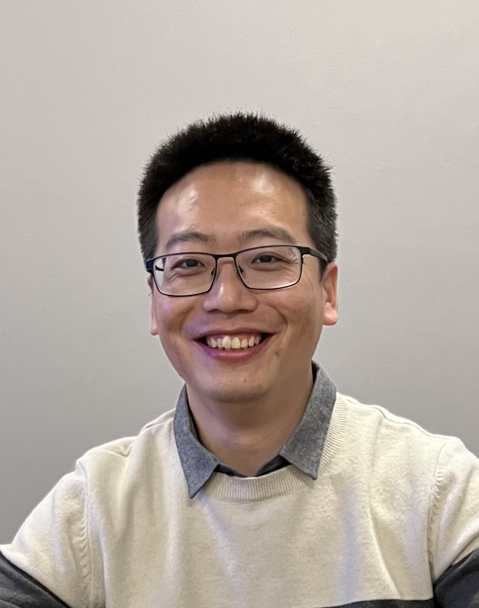

Ke Wang, Ph.D.
Postdoctoral Fellow (2021–2022)
- 2021-2022: Postdoctoral Fellow, Gu Lab, Beckman Research Institute, City of Hope
- 2019-2021: Technologist-in-charge & Assistant Researcher, Peking University People’s Hospital, Peking University Institute of Hematology, Beijing, China
- 2014-2019: Ph.D. in Integration of Life Sciences (Clinical Medicine), Peking University, Beijing, China
- 2010-2013: M.S. in Immunology, Central South University, Changsha, China
- 2006-2010: B.S. in Biotechnology, Inner Mongolia University of Science and Technology, China